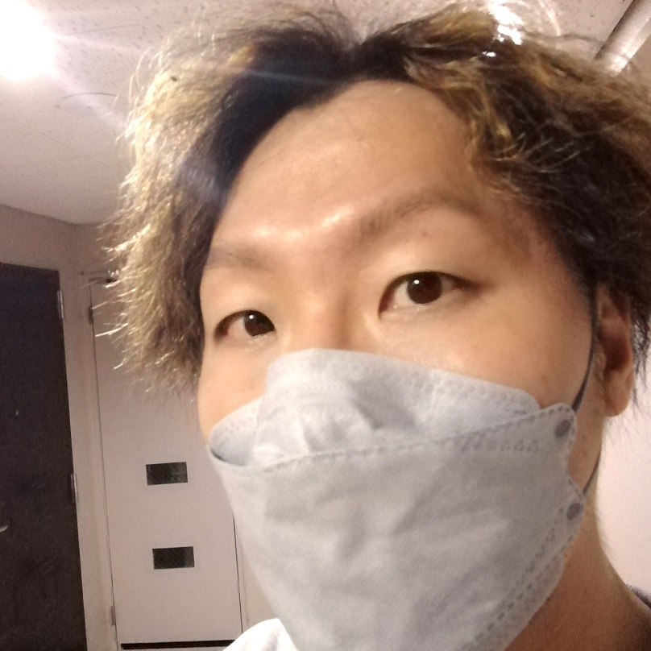

よく喋る。
仕事の話も雑談も。話し始めると、たぶんけっこう長いです。
大阪在住、43歳のシステムエンジニア。仕事ではプロダクト開発やデータ活用、チームの改善に関わっています。よく喋り、よく飲み、興味を持ったらすぐハマる人です。

01 / ABOUT ME
仕事ではシステムを作るだけでなく、チームの動き方や「どうしたらもっとよくなるか」を考えることにも夢中です。考えたことを文章にしたり、AIを試したり、気になるテーマができるとつい深掘りします。
会ったら、仕事の話も雑談も、飲みながらでも、けっこう喋ります。話してみるのが一番早いかもしれません。
話のタネ：AIの使い方、チームの改善、最近ハマったこと。あなたのハマりごとも聞きたいです。
02 / WHO I AM
会う前に知ってもらうなら、この3つ。
仕事の話も雑談も。話し始めると、たぶんけっこう長いです。
飲みながら話すのも好き。何の話でも、まずは気軽に。
興味を持ったら、調べたり試したり。気づけばその話ばかりしているかも。
03 / WORK
システムを作ることも、数字を使える形にすることも。これまで関わった仕事の一部です。
04 / SAY HELLO
仕事の話も、そうじゃない話も。気軽に声をかけてください。